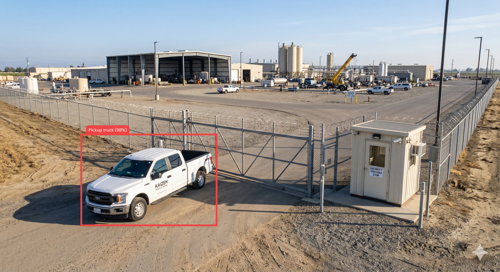
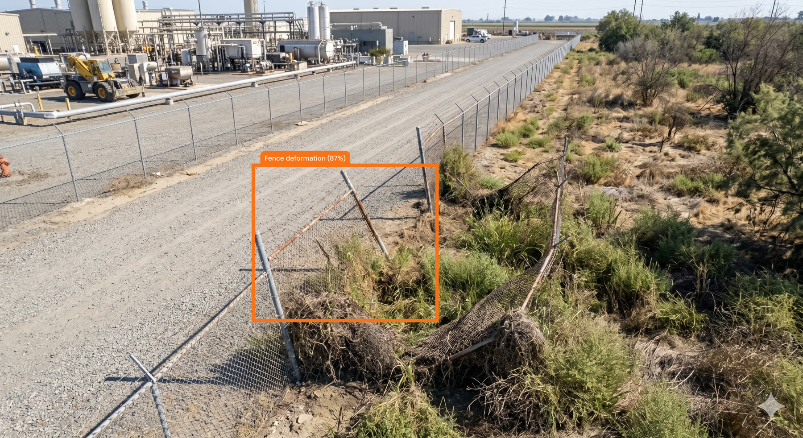
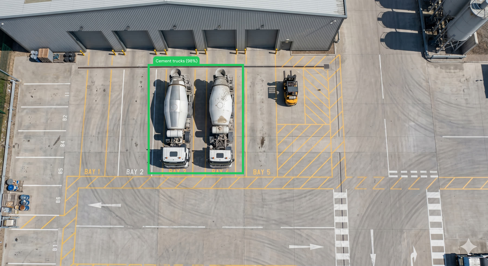

Night patrol across 5 flights identified 3 notable observations from 663 captured frames. One finding is critical and requires immediate follow-up: continued deterioration of the south boundary fence near waypoint 15, now past the intervention threshold. An unregistered vehicle was recorded inside the east gate line with no matching entry on the access register. Construction equipment in the northern loading bay was verified against the approved contractor list and needs no action.
663frames analysed
25AI detections
3kept after review
1critical
Observations
Observation #1: Unregistered vehicle inside east gate
High priority
AI detection confidence: 98%
A white pickup is parked inside the east gate line during the 18:14 sweep. The vehicle does not appear on the day's access register and no badge entry was logged against it. Given two unauthorized approaches at this gate in the past month, this warrants verification against the visitor log before the shift closes.
White pickup not on today's access register. Possibly a visitor for the construction crew, but no entry was logged. Flagged for the morning shift to reconcile.

AI detection: truck — east_gate_1814.jpg
Observation #2: South fence deformation — widening
Critical priority
AI detection confidence: 92%
Outward deformation of the south boundary fence near the waypoint 15 marker. Compared against the previous sweep the gap has widened to an estimated 0.6 m, exceeding the 0.5 m intervention threshold. This is consistent with the deterioration tracked since March and now presents a viable breach point. Ground inspection recommended before the next night shift.
Gap has widened since the last patrol — roughly 0.6 m now versus 0.4 m two weeks ago. Needs urgent ground inspection; I'd treat the sector as unsecured until it's closed.

AI detection: fence deformation — south_fence_1947.jpg
Observation #3: Construction equipment in northern loading bay
Low priority
AI detection confidence: 98%
Cement mixers and a forklift staged in the northern loading bay outside posted hours. All units match the approved contractor list for this month, so the presence is expected. Logged for completeness; no action required.
Cement mixers and forklift — all matched to the approved contractor list. No concerns. Dropped from high to low on review.

AI detection: truck, machinery — loading_bay_2302.jpg
Recommended actions
Dispatch a ground team to inspect the south fence at waypoint 15 before the next night shift.
Verify the unregistered pickup against the visitor and contractor access logs.
Re-baseline the south perimeter so future sweeps measure the gap automatically.
Close the lighting coverage gap between waypoints 8–12 on the west perimeter.
Generated by Night surveillance agent · reviewed by K. NairSample report · invented data